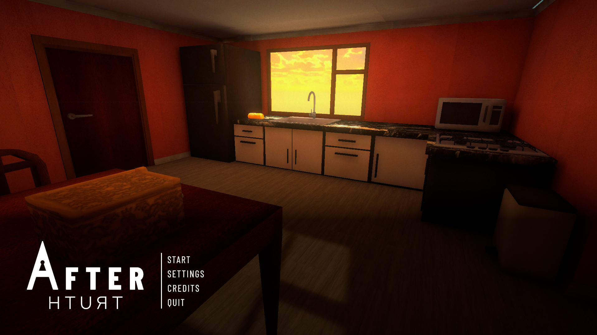
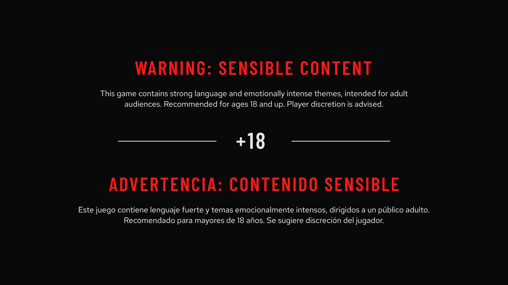
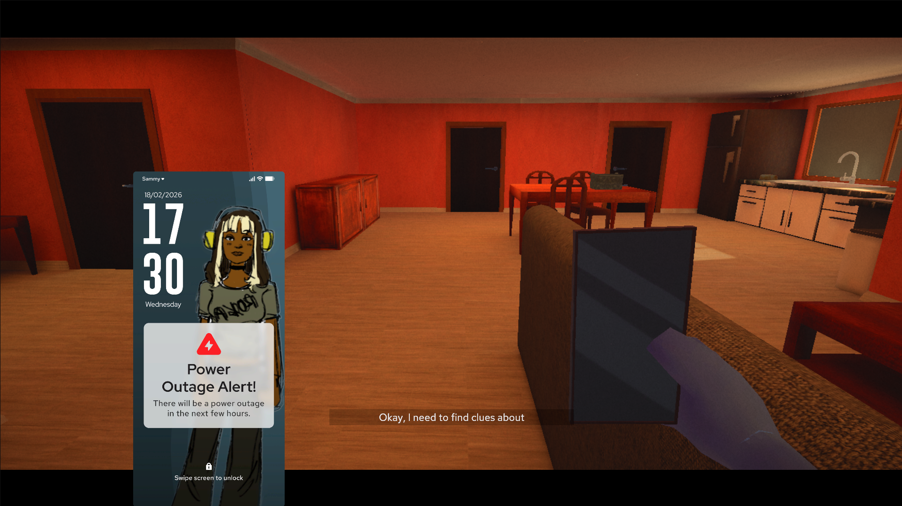
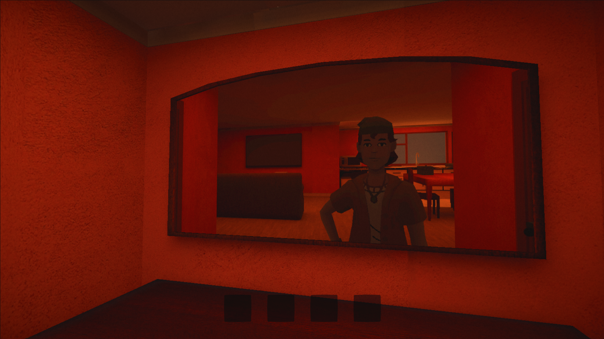
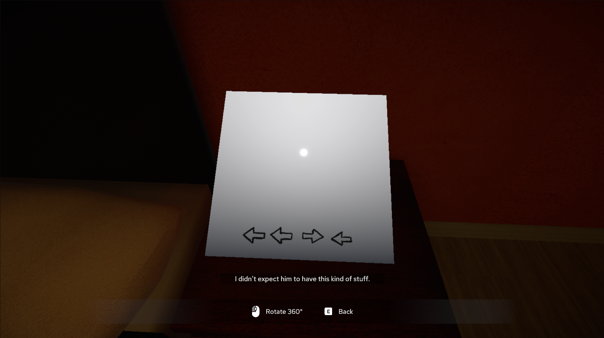
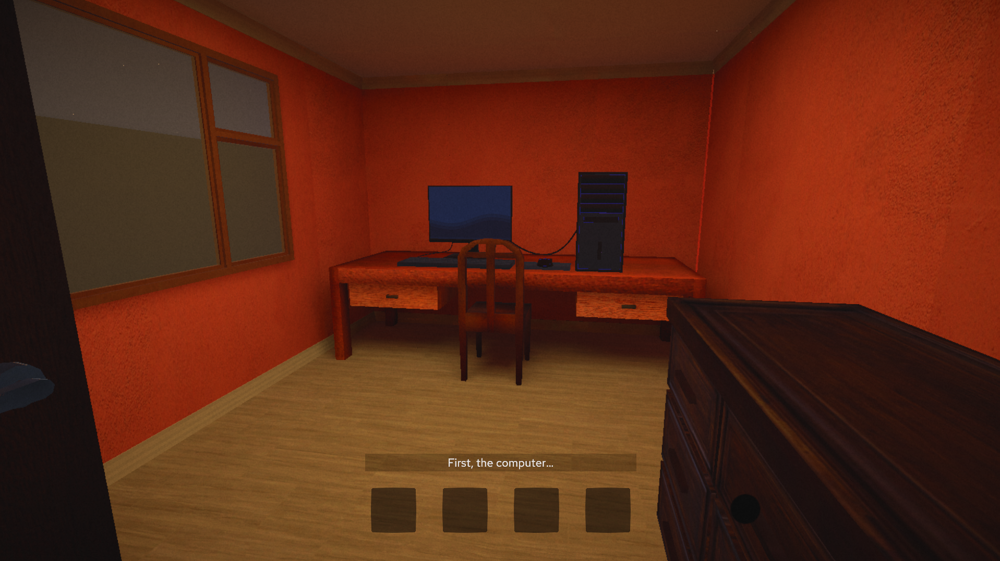

Aftertruth
Un juego de misterio narrativo en primera persona sobre reconstruir la verdad a partir de fragmentos — antes conocido como Missing Truths.
Descripción
AFTERTRUTH (antes Missing Truths) es un juego de misterio narrativo en primera persona, desarrollado como proyecto de bootcamp por un equipo de cinco personas: Laura Chaves, Miguel Torres, Mariano Ramírez, Sebastian Villota y yo. El proyecto se organizó en sprints con entregas el 11, 19 y 24-26 de agosto de 2026, publicando la beta en itch.io el día del lanzamiento.
Mi rol abarcó el diseño de UI/UX diegética y no diegética, la identidad visual completa del juego —paletas de color y logos— y la documentación del GDD, incluyendo su diseño y diagramación.
La beta ya está publicada en itch.io, con buena recepción: reseñas positivas de los mentores invitados de Generation, además de cientos de vistas y partidas jugadas desde su lanzamiento.
Proceso de desarrollo
- Concepto y GDD inicialDefinimos la premisa del misterio narrativo y el rumbo del proyecto, que pasó de llamarse Missing Truths a AFTERTRUTH a medida que la idea maduraba.
- Identidad visualDiseñé la identidad visual completa del juego —paletas de color y logos— buscando que fuera coherente con la temática de misterio y transmitiera los sentimientos clave que queríamos producir en el jugador.
- UI/UX diegética y no diegéticaDiseñé la interfaz en sus dos capas: elementos integrados al mundo del juego (diegéticos) y menús y pantallas tradicionales (no diegéticos), coordinando su implementación con el resto del equipo.
- Sprints de entregaEl trabajo se organizó en sprints con entregas el 11 y el 19 de agosto, cada uno con documentación y avances revisados por el equipo.
- Documentación del GDDDocumenté y diagramé el GDD del proyecto, manteniéndolo como referencia central del diseño a lo largo de todos los sprints.
- Sprint final y lanzamientoEn el sprint final (24-26 de agosto) cerramos la beta y la publicamos en itch.io el día del lanzamiento, el 26 de agosto de 2026.
Equipo
- Laura Chaves — Game Design, Project Manager y arte 3D de entornos
- Miguel Torres — Artista técnico, programador líder y arte 3D de personajes
- Mariano Ramírez — Programación, audio manager e implementación de UI
- Sebastian Villota — Arte 3D de objetos y pistas, diseño de audio
- Laura Rojas (yo) — Documentación, diseño UI/UX e identidad visual
Desafíos y aprendizajes
Uno de mis principales retos fue la gestión del tiempo y de los recursos que el equipo íbamos generando, para mantener un buen flujo de trabajo e integrar todo de forma coherente dentro de los plazos de cada sprint. Para lograrlo, prioricé una comunicación constante con el equipo y una organización clara de los entregables en cada etapa. El otro gran desafío fue diseñar la identidad visual del juego de manera que estuviera acorde con su temática de misterio y lograra transmitir los sentimientos clave que queríamos producir en el jugador. Esta experiencia fortaleció mi capacidad para sostener una dirección de arte coherente bajo presión de tiempo, sin perder de vista la experiencia emocional que buscábamos generar.
Herramientas
Habilidades demostradas
Galería





